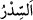

bahçelere dikilir.” el-Kâmûs’ta geçtiği üzere “ Arabistan kirazının ağacıdır.
Ebüsuûd Efendi şöyle der: “Doğrusu sidr iki türdür. Bunlardan bir türün meyvesi
yenilir ve el yıkamada yaprağından faydalanılır. Diğer türün ise meyvesi sert olup asla
yenmez. Bu, yabani olandır. Burada kasdedilen ikincisidir.
İşte Sebeliler’in ağaçları ağaçların iyisinden iken, çirkin işleri sebebiyle Allah
onların ağaçlarını ağaçların en kötüsü haline getirdi. Hâsılı Allah Teâlâ onların meyve
veren ağaçlarını helak etti ve onların yerine meyvesiz olanları bitirdi.
17. Nankörlük ettikleri için onları böyle cezalandırdık. Biz nankörden başkasını
cezalandırır mıyız!
Nimete “nankörlük ettikleri için” veya peygamberleri inkâr etmeleri sebebiyle
“onları” başka bir cezâ ile değil “böyle” korkunç bir cezâ ile veya (önceki âyette
zikredilen) bahçelerini çevirme ile “cezalandırdık.” Çünkü nimeti onlardan çekip aldık
ve yerine zıddını koyduk.
Îsâ (a.s.) ile Muhammed (s.a.) arasında başka peygamber gönderilmiş olduğuna bu
âyet delildir. Çünkü zikredilen vâkıanın Îsâ (a.s.) ile Muhammed (s.a.) arasındaki fetret
döneminde meydana geldiği rivâyet edilmiştir. ‘Îsâ (a.s.) ile Muhammed (s.a.) arasında
başka peygamber yoktur’ şeklindeki söz ile kitap sahibi bir peygamber olmadığı
kasdedilir. Bahru’l-ulûm’da böyle geçmektedir. Peygamberimiz (s.a.)’in “Benimle Îsâ
arasında peygamber yoktur.”[22] hadîsi de bu hususa ters düşmez. Bu hadis, ‘müstakil
bir şeriatla gönderilmiş bir peygamber yoktur’ demektir. Bilakis bu arada gönderilen
her peygamber Îsâ (a.s.)’ın şeriatını uygulamıştır. Bu konunun izah ve beyanı daha önce
defalarca geçmişti.
“Biz nankörden başkasını cezalandırır mıyız!” Yâni biz bu cezayı ancak nankörlükte
veya inkârda ileri gidenlere veririz. “ (mi/mı)” soru edatı olduğu halde burada
olumsuzluk mânâsınadır. el-Kâmûs’ta der ki: “ ” soru için olan kelimedir. Bazen
” soru için olan kelimedir. Bazen
inkâr/red mânâsına da olur.
Nimete nankörlük etmek ve küfrân-ı nimet, nimetin şükrünü yerine getirmeyi terk
ederek nimeti örtmektir. Nimeti inkâr/nankörlük konusunda daha çok “, dini inkâr
konusunda daha çok “ kelimesi kullanılır. “ kelimesi ise her iki konuda da
kullanılır.
Âyet işâret etmektedir ki şükreden mü’min, şükrü ile hem zâhirî hem de îkan (kesin
îman) takvâ, sıdk, ihlas, tevekkül ve güzel ahlak gibi mânevî nimetleri birbirine bağlar.
Şükretmeyen ise nankörlük ederek bütün bu nimetleri yok eder ve onların yerine
fakirlik, inkâr, nifak, şek, şüphe ve kötü sıfatları bulur. Bel’am’ın durumunu görmez